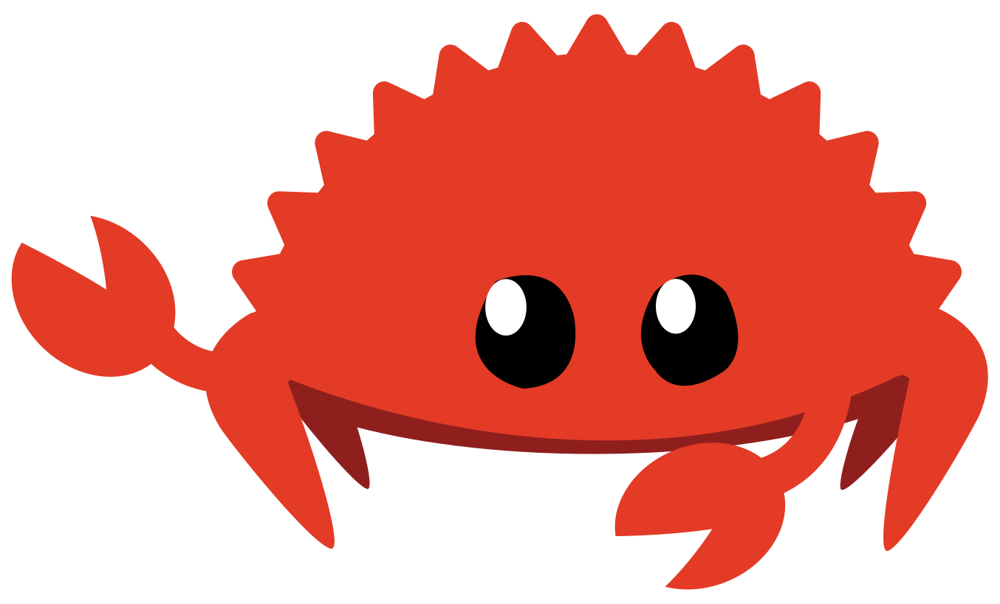

Pengantar
Catatan: Edisi buku ini sama dengan The Rust Programming Language yang tersedia dalam format cetak dan ebook dari No Starch Press.
Selamat datang di The Rust Programming Language, sebuah buku pengantar tentang Rust. Bahasa pemrograman Rust membantu Anda menulis perangkat lunak yang lebih cepat dan lebih andal. Ergonomi tingkat tinggi dan kontrol tingkat rendah sering kali bertentangan dalam desain bahasa pemrograman; Rust menantang konflik tersebut. Melalui keseimbangan antara kapasitas teknis yang powerful dan pengalaman pengembang yang sangat baik, Rust memberi Anda opsi untuk mengontrol detail tingkat rendah (seperti penggunaan memori) tanpa semua repot yang biasanya terkait dengan kontrol semacam itu.
Untuk Siapa Rust
Rust ideal bagi banyak orang untuk berbagai alasan. Mari lihat beberapa kelompok paling penting.
Tim Pengembang
Rust terbukti menjadi alat produktif untuk berkolaborasi di antara tim besar pengembang dengan tingkat pengetahuan pemrograman sistem yang bervariasi. Kode tingkat rendah rentan terhadap berbagai bug halus, yang dalam kebanyakan bahasa lain hanya dapat tertangkap melalui pengujian ekstensif dan tinjauan kode teliti oleh pengembang berpengalaman. Di Rust, compiler memainkan peran penjaga gerbang dengan menolak mengompilasi kode yang mengandung bug-bug sulit tertangkap ini, termasuk bug concurrency. Dengan bekerja bersama compiler, tim dapat menghabiskan waktunya untuk fokus pada logika program daripada mengejar bug.
Rust juga membawa alat pengembang kontemporer ke dunia pemrograman sistem:
- Cargo, manajer dependensi dan alat build yang disertakan, membuat penambahan, kompilasi, dan pengelolaan dependensi menjadi tidak merepotkan dan konsisten di seluruh ekosistem Rust.
- Alat pemformatan
rustfmtmemastikan gaya penulisan kode yang konsisten di seluruh pengembang. - Rust Language Server menggerakkan integrasi integrated development environment (IDE) untuk penyelesaian kode dan pesan kesalahan sebaris (inline).
Dengan menggunakan alat-alat ini dan alat lainnya di ekosistem Rust, pengembang dapat produktif saat menulis kode tingkat sistem.
Pelajar
Rust untuk pelajar dan mereka yang tertarik belajar tentang konsep sistem. Menggunakan Rust, banyak orang telah belajar tentang topik seperti pengembangan sistem operasi. Komunitas sangat ramah dan senang menjawab pertanyaan pelajar. Melalui upaya seperti buku ini, tim Rust ingin membuat konsep sistem lebih mudah diakses oleh lebih banyak orang, terutama mereka yang baru memulai pemrograman.
Perusahaan
Ratusan perusahaan, besar dan kecil, menggunakan Rust di produksi untuk berbagai tugas, termasuk alat baris perintah, layanan web, alat DevOps, perangkat terteman (embedded), analisis dan transcoding audio dan video, kriptokurensi, bioinformatika, mesin pencari, aplikasi Internet of Things, pembelajaran mesin, dan bahkan bagian-bagian utama dari peramban web Firefox.
Pengembang Sumber Terbuka
Rust untuk orang-orang yang ingin membangun bahasa pemrograman Rust, komunitas, alat pengembang, dan pustaka. Kami sangat senang jika Anda berkontribusi pada bahasa Rust.
Orang yang Menghargai Kecepatan dan Stabilitas
Rust untuk orang-orang yang menginginkan kecepatan dan stabilitas dalam sebuah bahasa. Dengan kecepatan, kami berarti baik seberapa cepat kode Rust dapat dijalankan maupun kecepatan di mana Rust memungkinkan Anda menulis program. Pemeriksaan compiler Rust memastikan stabilitas melalui penambahan fitur dan refactoring. Hal ini berbeda dengan kode warisan (legacy) yang rapuh di bahasa-bahasa tanpa pemeriksaan ini, yang sering membuat pengembang takut memodifikasinya. Dengan berusaha untuk abstraksi biaya nol—fitur tingkat tinggi yang kompilasi ke kode tingkat rendah secepat kode yang ditulis secara manual—Rust berusaha membuat kode aman juga menjadi kode cepat.
Bahasa Rust berharap dapat mendukung banyak pengguna lain juga; yang disebutkan di sini hanyalah beberapa pemangku kepentingan terbesar. Secara keseluruhan, ambisi terbesar Rust adalah menghilangkan trade-off yang telah diterima peprogram selama beberapa dekade dengan menyediakan keamanan dan produktivitas, kecepatan dan ergonomi. Cobalah Rust, dan lihat apakah pilihan-pilihan Rust cocok untuk Anda.
Untuk Siapa Buku Ini
Buku ini mengasumsikan Anda telah menulis kode dalam bahasa pemrograman lain, tetapi tidak membuat asumsi tentang bahasa mana pun. Kami telah berusaha membuat materi ini dapat diakses secara luas oleh mereka dari berbagai latar belakang pemrograman. Kami tidak menghabiskan banyak waktu membicarakan apa itu pemrograman adalah atau cara memikirkannya. Jika Anda benar-benar baru dalam pemrograman, Anda akan dilayani lebih baik dengan membaca buku yang secara khusus menyediakan pengantar pemrograman.
Cara Menggunakan Buku Ini
Secara umum, buku ini mengasumsikan Anda membacanya secara berurutan dari depan ke belakang. Bab-bab kemudian membangun konsep di bab-bab sebelumnya, dan bab-bab sebelumnya mungkin tidak mempelajari detail topik tertentu tetapi akan meninjau topik tersebut di bab yang lebih lanjut.
Anda akan menemukan dua jenis bab dalam buku ini: bab konsep dan bab proyek. Dalam bab konsep, Anda akan mempelajari aspek tertentu dari Rust. Dalam bab proyek, kami akan membangun program kecil bersama-sama, menerapkan apa yang Anda pelajari sejauh ini. Bab 2, Bab 12, dan Bab 21 adalah bab proyek; sisanya adalah bab konsep.
Bab 1 menjelaskan cara menginstal Rust, cara menulis program “Halo, dunia!”, dan cara menggunakan Cargo, manajer paket dan alat build Rust. Bab 2 adalah pengantar praktis untuk menulis program di Rust, meminta Anda membangun permainan tebak angka. Di sini, kami membahas konsep pada tingkat tinggi, dan bab-bab kemudian akan memberikan detail tambahan. Jika Anda ingin langsung praktik, Bab 2 adalah tempatnya. Jika Anda adalah pempelajar yang teliti dan lebih suka mempelajari setiap detail sebelum lanjut ke yang berikutnya, Anda mungkin ingin melewati Bab 2 dan langsung ke Bab 3, yang membahas fitur-fitur Rust yang mirip dengan bahasa pemrograman lain; kemudian, Anda dapat kembali ke Bab 2 ketika Anda ingin mengerjakan proyek menerapkan detail yang telah Anda pelajari.
Di Bab 4, Anda akan belajar tentang sistem kepemilikan Rust. Bab 5
membahas struct dan metode. Bab 6 mencakup enum, ekspresi match,
dan konstruksi alur kontrol if let dan let...else. Anda akan menggunakan
struct dan enum untuk membuat tipe kustom.
Di Bab 7, Anda akan belajar tentang sistem modul Rust dan tentang aturan privasi untuk mengatur kode dan antarmuka pemrograman aplikasi (API) publiknya. Bab 8 membahas beberapa struktur data koleksi umum yang disediakan pustaka standar: vektor, string, dan hash map. Bab 9 menjelajahi filsafat dan teknik penanganan kesalahan Rust.
Bab 10 menggali generik, trait, dan lifetime, yang memberi Anda kekuatan
untuk mendefinisikan kode yang berlaku untuk banyak tipe. Bab 11 seluruhnya
tentang pengujian, yang meskipun dengan jaminan keamanan Rust tetap diperlukan
untuk memastikan logika program Anda benar. Di Bab 12, kami akan membangun
implementasi kami sendiri dari subset fungsionalitas dari alat baris perintah
grep yang mencari teks di dalam berkas. Untuk ini, kami akan menggunakan banyak
konsep yang kami bahas di bab-bab sebelumnya.
Bab 13 mengeksplorasi closure dan iterator: fitur Rust yang berasal dari bahasa pemrograman fungsional. Di Bab 14, kami akan menelusuri Cargo secara lebih mendalam dan membahas praktik terbaik untuk berbagi pustaka Anda dengan orang lain. Bab 15 membahas smart pointer yang disediakan pustaka standar dan trait yang mengaktifkan fungsionalitasnya.
Di Bab 16, kami akan menelusuri model-model pemrograman concurrent berbeda dan membicarakan bagaimana Rust membantu Anda memprogram dalam beberapa thread tanpa ketakutan. Di Bab 17, kami membangun di atas itu dengan mengeksplorasi sintaks async dan await Rust, bersama dengan task, future, dan stream, serta model concurrency ringan yang mereka aktifkan.
Bab 18 melihat bagaimana idiom Rust dibandingkan dengan prinsip pemrograman berorientasi objek yang mungkin Anda kenal. Bab 19 adalah referensi tentang pola dan pencocokan pola, yang merupakan cara powerful mengekspresikan ide di seluruh program Rust. Bab 20 berisi beragam topik lanjutan yang menarik, termasuk unsafe Rust, makro, dan lebih lanjut tentang lifetime, trait, tipe, fungsi, dan closure.
Di Bab 21, kami akan menyelesaikan proyek di mana kami akan mengimplementasikan server web multithread tingkat rendah!
Akhirnya, beberapa lampiran berisi informasi berguna tentang bahasa dalam format yang lebih seperti referensi. Lampiran A mencakup kata kunci Rust, Lampiran B mencakup operator dan simbol Rust, Lampiran C mencakup trait yang dapat diturunkan yang disediakan pustaka standar, Lampiran D mencakup beberapa alat pengembangan berguna, dan Lampiran E menjelaskan edisi Rust. Di Lampiran F, Anda dapat menemukan terjemahan buku, dan di Lampiran G kami akan membahas cara Rust dibuat dan apa itu nightly Rust.
Tidak ada cara salah untuk membaca buku ini: Jika Anda ingin melompat ke depan, silakan! Anda mungkin harus kembali ke bab-bab sebelumnya jika mengalami kebingungan. Tapi lakukan apa yang berhasil untuk Anda.
Bagian penting dari proses belajar Rust adalah belajar cara membaca pesan kesalahan yang ditampilkan compiler: Pesan-pesan ini akan mengarahkan Anda menuju kode yang berfungsi. Sebagai akibatnya, kami akan menyediakan banyak contoh yang tidak kompilasi beserta pesan kesalahan yang akan ditampilkan compiler dalam setiap situasi. Ketahui bahwa jika Anda memasukkan dan menjalankan contoh acak, mungkin tidak akan kompilasi! Pastikan Anda membaca teks di sekitarnya untuk melihat apakah contoh yang Anda coba jalankan memang dimaksudkan untuk error. Dalam kebanyakan situasi, kami akan mengarahkan Anda ke versi yang benar dari kode yang tidak kompilasi. Ferris juga akan membantu Anda membedakan kode yang tidak dimaksudkan untuk bekerja:
| Ferris | Arti |
|---|---|
 | Kode ini tidak kompilasi! |
 | Kode ini panic! |
 | Kode ini tidak menghasilkan perilaku yang diinginkan. |
Dalam kebanyakan situasi, kami akan mengarahkan Anda ke versi yang benar dari kode manapun yang tidak kompilasi.
Kode Sumber
Berkas sumber dari mana buku ini dibangun dapat ditemukan di GitHub.